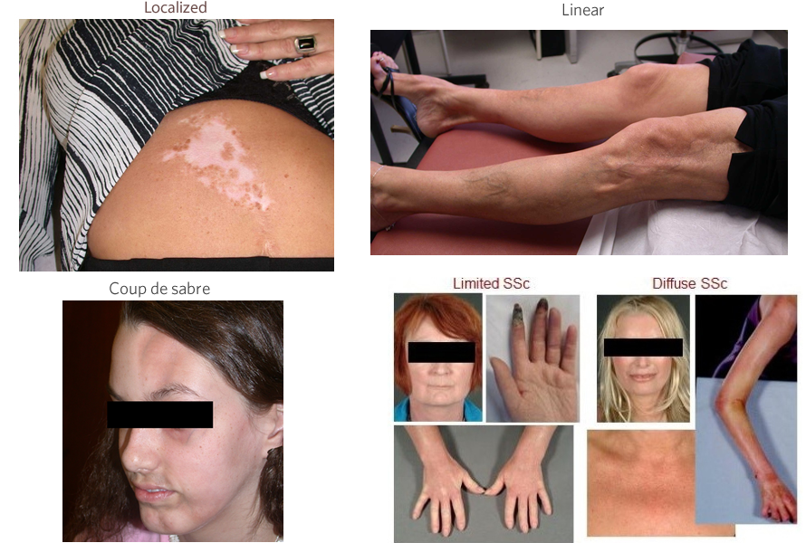

Module: Scleroderma: Basic Overview
Elaine A. Furst, RN, MA, Janet L. Poole, Ph.D., OTR/L, Cindy Mendelson, PhD, RN, Dinesh Khanna, MD, MS
The word scleroderma literally means “hard skin.” French physicians named the disease in the late 1700s, although it had been described in various ways throughout history. There are two main forms:
Localized scleroderma
- Morphea (patches of thickened skin)
- Linear (thickened skin attached to underlying muscle and bone)
- Scleroderma en coup de sabre (“cut of the saber,” linear scleroderma of the head and face only; tends to occur in children)
Systemic scleroderma or systemic sclerosis
Systemic scleroderma or systemic sclerosis affects approximately 80,000 to 100,000 people in the US. It includes both skin and internal organ involvement. Systemic scleroderma is further divided into 4 different subtypes.
- Limited cutaneous scleroderma is skin thickening in the extremities with certain types of organ involvement. Approximately 55% of people with systemic scleroderma have this type. This used to be called CREST, which stands for Calcinosis, Raynaud’s phenomenon, Esophageal dysfunction, Sclerodactyly, and Telangiectasias. The term CREST is still sometimes inaccurately used to describe limited scleroderma and can occur in late diffuse cutaneous scleroderma. There is a misconception that patients with limited disease don’t develop internal organ involvement. This is not true. Patients with limited scleroderma can develop GI, lung, heart, and sometimes kidney involvement.
- Diffuse cutaneous scleroderma is extensive skin thickening above the elbows and knees and internal organs involvement. About 30% of people with systemic scleroderma have this type. 
- Scleroderma sine sclerosis is Raynaud’s phenomenon and scleroderma of the internal organs without skin thickening; About 5-10% of people with systemic scleroderma have this type.
- Overlap syndrome is where the person has scleroderma and another rheumatological disease (rheumatoid arthritis, lupus, etc). About 5-10% of people with systemic scleroderma have this type.